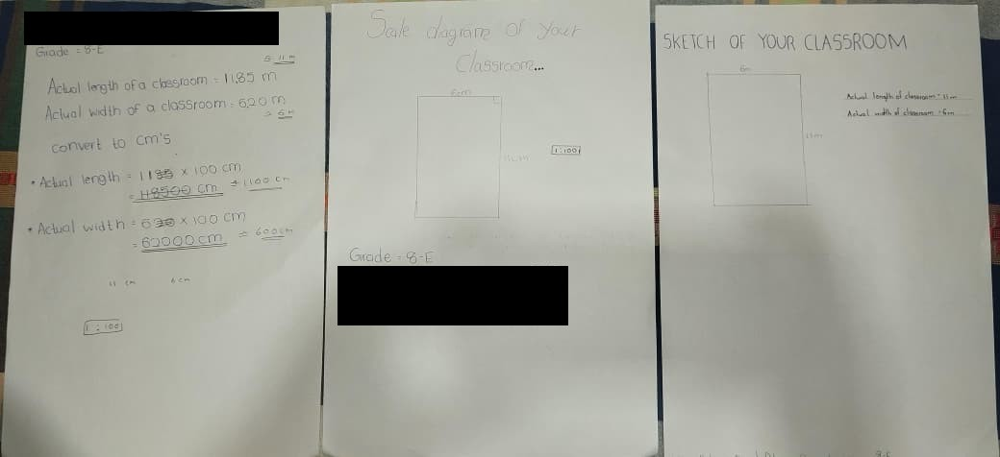

A scale plan of our classroom
Three sheets trace a room measurement from the first figures to a drawing at 1:100.
Learning goal
Carry the same measured dimensions through unit conversion and into a scale drawing.
What we did
I asked groups to measure their classroom, sketch its outline and draw a plan at 1:100. The worksheet starts with 11.85 m × 6.20 m. The sketch uses 11 m × 6 m, and the students’ drawing uses 11 cm × 6 cm.
Why I chose this sample
I selected the three sheets together because the finished rectangle alone hides the change. On the measurement sheet the students substituted 11 and 6 for the original metre values. The later drawing is consistent with those substituted values.
How I read the work
Using the recorded measurements, 11.85 m × 6.20 m converts to 1,185 cm × 620 cm. Dividing both lengths by 100 gives 11.85 cm × 6.20 cm on paper. I would check both dimensions against the first sheet, as well as checking the scale label.
What I would change
Checking only the ruler lengths on the finished plan would miss where the discrepancy began. In a follow-up lesson I would ask pairs to draw both outlines on one sheet, compare the differences of 0.85 cm and 0.20 cm, and explain which outline represents the measured room.
Classroom evidence
